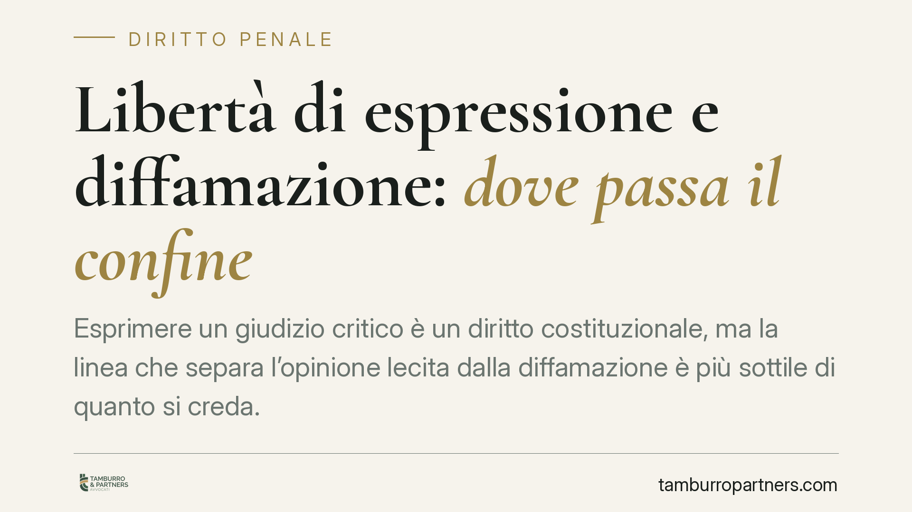

Libertà di espressione e diffamazione: dove passa il confine
Esprimere un giudizio critico è un diritto costituzionale, ma la linea che separa l'opinione lecita dalla diffamazione è più sottile di quanto si creda. Capire i criteri fissati dalla giurisprudenza aiuta a comunicare senza esporsi a responsabilità penali e civili, soprattutto in un contesto dove ogni contenuto pubblicato online resta tracciabile e diffuso.

Il fatto e perché conta
La domanda ricorre spesso: si può criticare qualcuno pubblicamente senza rischiare una querela? La risposta è affermativa, ma solo entro limiti precisi. La libertà di manifestazione del pensiero non è illimitata: incontra un confine nella tutela della reputazione altrui. Superarlo espone al reato di diffamazione e, in parallelo, a un'azione risarcitoria in sede civile.
Il tema riguarda chiunque pubblichi contenuti: giornalisti, blogger, ma anche il singolo utente che scrive un commento o una recensione online.
Inquadramento normativo
Il punto di partenza è l'art. 21 della Costituzione, che riconosce a tutti il diritto di manifestare liberamente il proprio pensiero con la parola, lo scritto e ogni altro mezzo di diffusione. È una libertà fondamentale, ma non assoluta: la stessa Costituzione la bilancia con altri diritti di pari rango, tra cui l'onore e la reputazione della persona.
Sul piano penale, la diffamazione è punita dall'art. 595 del codice penale, che sanziona chi offende l'altrui reputazione comunicando con più persone. Quando l'offesa avviene a mezzo stampa o con altro mezzo di pubblicità, la pena è aggravata. La legge n. 47 del 1948 (legge sulla stampa) disciplina inoltre le responsabilità che si aggiungono a quella dell'autore materiale: in particolare quella del direttore responsabile, tenuto a controllare il contenuto pubblicato, e dell'editore o proprietario della testata.
La Cassazione ha costruito nel tempo un orientamento stabile su ciò che rende lecita la critica. Perché l'espressione non sia diffamatoria devono ricorrere tre condizioni: la *verità* del fatto posto a fondamento del giudizio, l'*interesse pubblico* alla comunicazione (rilevanza sociale della notizia) e la *continenza*, cioè la misura nell'esposizione, sia formale che sostanziale.
Opinione o insulto: la distinzione pratica
Il criterio decisivo è la continenza formale. La critica, per quanto aspra, resta lecita finché argomenta e valuta fatti; diventa illecita quando trascende nell'attacco personale gratuito, nell'insulto o nell'epiteto ingiurioso privo di collegamento con il fatto criticato.
Un giudizio negativo, anche severo, su un'opera, una condotta pubblica o una decisione è coperto dal diritto di critica. L'espressione che mira soltanto a sminuire la persona — non le sue azioni — perde la copertura costituzionale.
È rilevante anche la distinzione tra fatto e valutazione. Attribuire a qualcuno un fatto falso e lesivo è più grave di esprimere un'opinione soggettiva su un fatto vero. Nel primo caso manca il presupposto della verità; nel secondo il giudizio, se contenuto nei toni, resta lecito.
Implicazioni pratiche
Chi pubblica contenuti deve considerare che la responsabilità non si esaurisce nell'autore. Nella diffusione a mezzo stampa possono rispondere anche il direttore responsabile e l'editore, ciascuno per il proprio ruolo. Sul piano civile, la persona offesa può chiedere il risarcimento del danno anche in assenza di condanna penale.
Nel contesto digitale il rischio è amplificato: un commento resta consultabile, condivisibile e facilmente documentabile come prova. La percezione di informalità dei social non attenua la responsabilità giuridica.
Cosa fare in concreto
- Verifica i fatti prima di pubblicare: distingui ciò che è documentabile da ciò che è tua opinione, e presenta il secondo come tale.
- Modera i toni: critica la condotta o l'operato, non la dignità della persona. Evita epiteti e attacchi ad personam.
- Conserva le fonti su cui si fonda il tuo giudizio, così da poter dimostrare la verità del fatto in caso di contestazione.
- Valuta l'interesse pubblico del contenuto: la critica è più tutelata quando riguarda temi di rilevanza collettiva, meno quando è puramente privata.
- Se ricevi una querela o una diffida, non rispondere pubblicamente d'impulso: raccogli la documentazione e fatti assistere prima di ogni replica.
Consigliamo, in caso di dubbio sul contenuto da pubblicare o di contestazioni già ricevute, una valutazione preventiva del testo alla luce dei tre criteri di verità, interesse e continenza.
Disclaimer
Contributo informativo a cura di Tamburro & Partners - Avv. Giuseppe Tamburro. Non costituisce parere legale.
Ogni condominio ha una storia a sé.
Se gestisci un'amministrazione e vuoi un confronto su una specifica questione condominiale, scrivi allo studio. Ti rispondiamo entro un giorno lavorativo.